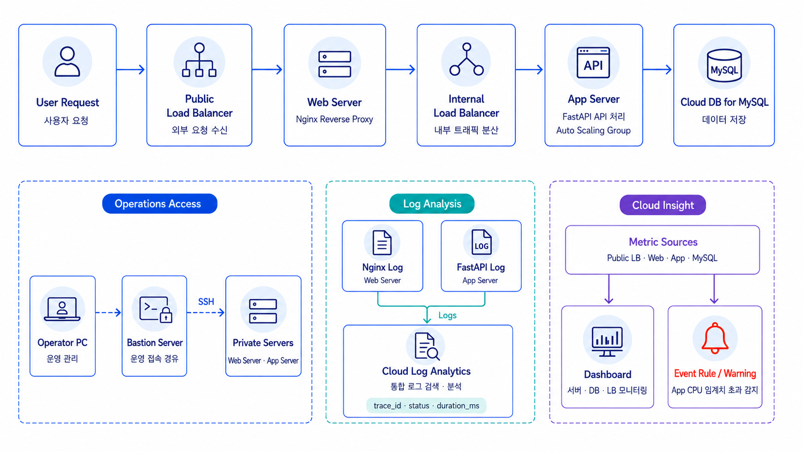

1. 프로젝트를 진행한 이유
AWS 중심으로 진행한 클라우드 운영 실습을 NAVER Cloud Platform으로 확장하고, Web·App·DB 계층이 분리된 서비스 운영 흐름을 경험하기 위해 진행했습니다.
Nginx와 FastAPI 로그를 하나의 trace_id로 연결하고, Cloud Log Analytics와 Cloud Insight를 사용해 장애 요청과 상태 변화를 확인하는 것을 목표로 했습니다.
2. 전체 아키텍처

3. 사용한 기술과 선택 이유
- Public Application Load Balancer — 외부 요청을 Nginx Web Server로 전달합니다.
- Nginx / Internal Application Load Balancer — Web과 App 계층을 분리하고 내부 요청 경로를 구성합니다.
- FastAPI Auto Scaling Group — Application Tier를 구성하고 Health Check와 확장 범위를 관리합니다.
- Cloud DB for MySQL — Private Database 계층에서 데이터 저장과 조회를 처리합니다.
- Cloud Log Analytics — Nginx와 FastAPI의 JSON 로그를 수집하고 trace_id로 검색합니다.
- Cloud Insight / Terraform — 주요 지표와 Event를 확인하고 NCP 인프라를 코드로 구성합니다.
4. 구현 흐름
- 외부 요청을 Public Load Balancer가 Nginx Web Server로 전달합니다.
- Nginx가 X-Trace-ID를 포함해 Internal Load Balancer로 요청을 전달합니다.
- Internal Load Balancer가 FastAPI Auto Scaling Group으로 요청을 분산합니다.
- FastAPI가 Cloud DB for MySQL에 연결해 데이터를 생성하고 조회합니다.
- Nginx와 FastAPI가 동일한 trace_id를 포함한 JSON 로그를 생성합니다.
- Cloud Log Analytics에서 요청 로그를 연결하고 Cloud Insight에서 지표와 Event를 확인합니다.
5. 테스트 결과
- App Target이 UP이고 Health Check 응답이 HTTP 200인 것을 확인했습니다.
- Cloud DB 연결과 Item 데이터 생성·조회 요청을 확인했습니다.
- /api/slow과 /api/error 요청을 통해 지연 로그와 500 오류 로그를 확인했습니다.
- Cloud Log Analytics에서 동일한 trace_id로 Web과 App 로그를 연결했습니다.
- CPU 부하 후 Cloud Insight Event Rule의 Warning Event 발생을 확인했습니다.
6. 트러블슈팅
App Target이 DOWN 상태로 유지됨
서버가 생성된 뒤에도 FastAPI 설치와 실행이 완료되기 전에 Health Check가 시작되는 문제를 확인했습니다. Python과 패키지 설치 재시도, NAT·Route·ACG 의존성과 Health Check 유예 시간을 조정해 Target을 UP 상태로 전환했습니다.
계층별 로그 연결
Nginx가 전달하는 X-Trace-ID를 FastAPI 로그에도 기록해 Web과 App 로그를 동일한 식별자로 검색할 수 있도록 구성했습니다.
7. 보안·비용·운영 관점에서 신경 쓴 점
- 외부 사용자는 Public Load Balancer를 통해서만 서비스에 접근하도록 구성했습니다.
- Bastion Host를 통해 Private Web·App Server에 운영 접근하도록 제한했습니다.
- NAT Gateway로 Private Server의 초기화와 Agent 통신 경로를 구성했습니다.
- 단기 실습 비용을 고려해 App Auto Scaling 범위와 Cloud DB 구성을 조정하고 실습 후 리소스를 삭제했습니다.
8. 프로젝트를 통해 배운 점
클라우드가 달라져도 계층 분리, Health Check, 구조화 로그와 지표 기반 상태 감시라는 운영 원칙은 공통으로 적용된다는 점을 확인했습니다. 요청 식별자를 Web과 App에 일관되게 전달하면 여러 계층의 로그를 하나의 흐름으로 분석할 수 있음을 배웠습니다.
9. 향후 개선 방향
- Cloud Log Analytics Agent 설치와 App 로그 설정을 배포 스크립트 또는 자동화 절차로 정리합니다.
- 단일 Web·App과 비 HA Database 구성을 Multi Zone, 다중 인스턴스, Database HA·Backup 구성으로 확장합니다.
- Event Rule을 실제 운영 기준으로 조정하고 지연 시간·5xx·Target 상태를 함께 확인합니다.
- Event 발생 시 Email, SMS 또는 외부 Integration으로 운영자에게 알림을 전달합니다.